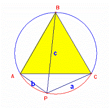
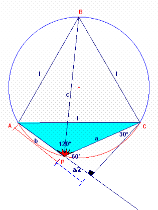

Problema 282
Solución de William Rodríguez Chamache.
profesor de geometria de la "Academia integral class" Trujillo- Perú (11 de diciembre de 2005)
Sabemos que en todo triángulo equilátero al tomar un punto sobre la circunferencia circunscrita se determina la siguiente relación
Que reemplazando obtenemos: a+b=c

De acá obtenemos: de donde obtenemos: …… (1)
Luego en el triángulo ACP aplicamos el segundo teorema de euclides

Luego en el triángulo APC: por euclides obtenemos.
…….. (2) Luego remplazando (1) en (2)
Que simplificando obtenemos
Donde: l=lado del triángulo equilátero
Aquí algunas propiedad sobre las relaciones que se cumplen en los triángulos equiláteros
http://www.geometriainteractiva.com/william/relacionesmetricascolegio/rm6.htm